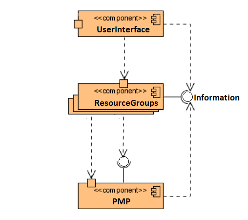

Versionshistorie
Version 3.1 (07.02.2012)
- Erstes Gerüst des Entwurfs
Einleitung
Die entworfene Software dient als eine Beispielapp, die die Funktionen der PMP bezüglich des Umgangs mit vielen Ressourcen prüft.
Die Software ist reine Testapp und soll keine ausgefallene Oberfläche besitzen. Dafür soll sie viele Ressourcengruppen für die PMP anbieten.
In erster Linie wird die Funktionalität der Software gesichert, sodass die zusätzlichen Ressourcengruppen nachhinein hinzugefügt werden.
Entwurfsprinzipien
Die Software ist eine Informationensapplikation. Somit wird diese hauptsächlich die Informationen aus dem Internet beziehen und diese dem Benutzer anzeigen. Die Hauptquelle werden die diversen RSS-Feeds sein. Der Benutzer wird in der Lage sein die Informationen zu strukturieren, was er mit Hilfe von PMP erreichen können wird. Die PMP wird die einzelnen Informations-Streams örtlich und zeitlich spezifizieren können.
Architektur
Das System ist in die drei Komponenten UserInterface, ResourceGroups und PMP untergliedert Der Zugriff auf die Komponenten erfolgt über die entsprechenden Klassen. Mit PMP gemeinsam genutzten Ressourcen-Gruppen werden auch über die entsprechende Klassen gesteuert. Weitere Schnittstellen zwischen den Komponenten gibt es nicht.
Die folgende Abbildung zeigt die Komponenten im Überblick.

Komponenten
Die folgenden Abschnitte beschreiben die Komponenten der Anwendung, deren Schnittstellen, ihren Aufbau und ihre Funktion. Auf eine detaillierte Beschreibung, die jede Klasse, jede Methode und jedes Attribut umfasst, wurde bewusst verzichtet. Die folgenden Beschreibungen legen den Schwerpunkt auf die Erklärung der Konzepte und Ideen, die hinter den Komponenten und ihrer Funktionsweise stecken.
UserInterface
Die graphische Benutzungsschnittstelle besteht im wesentlichen aus wenigen Activity-Fenstern, die die gewünschten Informationen anbieten werden. Diese Activity-Fenster wird man durch ein Regler umschalten können. Auf die Funktionen der Schnittstelle wird über die entsprechende UI-Klasse zugegriffen.
ResourceGroups
Die Komponente ResourceGroups implementiert die Möglichkeiten die einzelnen Informationsbereiche individuell einstellen zu können. Dabei wird man zu der PMP verlinkt und nimmt die Einstellungen von dieser App aus.
PMP
PMP ist einer Art externer Komponente, die die einzelnen Ressourcen-Gruppen der App3 verwaltet.